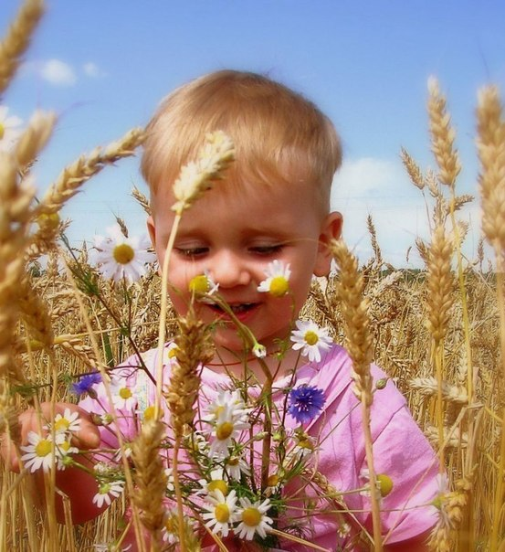
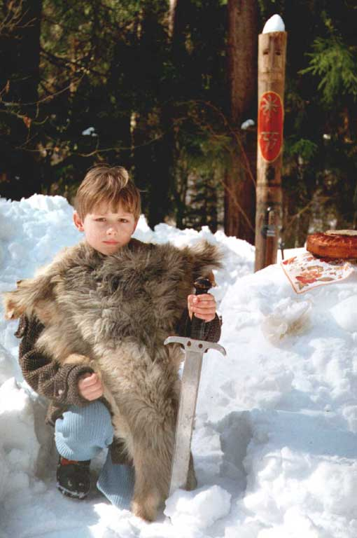
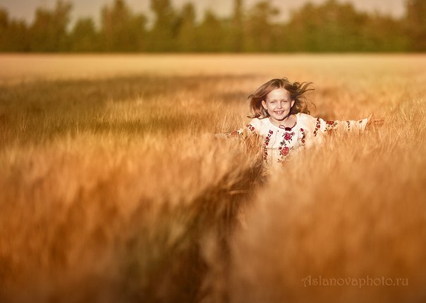

«Ежели коие младые Родители станут оберегать чадо свое от созидательных деяний на благо Рода своего, то загубят они Душу и жизнь его. И будет Душа того чада - черствой, а жизнь безрадостной и никчемной. А ежели младые Родители станут всячески потворствовать разным прихотям чада своего, то погубят они Светлый Дух его, а погибель Духа ребёнка не прощается никому из живых».
Слово Мудрости волхва Велимудра
Ведическое воспитание детей
Ведическое Воспитание ребенка напрямую зависит от варновой принадлежности. Варна - это эволюционная ступень духовных и душевных качеств человека. Определяется по цвету его Жар - тела («жар» - огонь, пламя, свет, цвет; «вар» - краска, варево) и по той жизненной цели, которую ставит перед собой человек. Существуют такие понятия варн: если человек совершенствуется, то – это «ведуны»; если человек служит своему народу и защищает его, то – это «витязи», если человек живет и стремится к богатству и семейному благополучию, то – это «веси»; если человек желает только отдыха, еды, совокупления, покоя и развлечения, то является «смердом». Рассмотрим первые три категории, потому как четвёртая варна образуется в поле души не в один раз сразу, как и другие Варны. Все эти проявления жизненных целей зависят также от физического проявления генофонда каждого человека в отдельности. Для этого момента важно знать каждому вступающему в Семейный Союз о Родовом Законе Рита.
Как рассмотреть и понять, к какой варне принадлежит детская душа? Родителям необходимо стать внимательными в понимании детского характера, для этого необходимо развивать себя и жить, как учили наши далёкие Предки.
I. Дети, принадлежащие к варне ведающих, как правило, очень способные и имеют стремление к познанию, науке, книгам и мистическим умениям. Со временем, при верном воспитании, из них вырастают ученые, священники (настоящие духовные проводники), первооткрыватели, духовные учителя и тому подобное. Эти дети стремятся к глубинному познанию Истины и дают это знание другим людям. Они с детства желают что-то изучать, внимательно слушают то, что им говорят. Для таких детей самое главное — это понять смысл и суть. Они волнуются и испытывают неудовлетворение, если чего-то не понимают, поэтому часто пребывают в размышлениях. Главная черта этих людей — честность. Такого человека нельзя купить. Если ребенок не имеет честности и покупается на что-то, значит, у него другая варна.
Воспитание в варне ведающих. Важно, чтобы и сами родители имели соответствующий уровень духовности, иначе им трудно будет понимать такого ребенка. Если вы не уверены, что можете дать ребенку необходимое воспитание, отдайте его на учебу человеку, который действительно, является духовной личностью и принадлежит к варне ведающих; только тогда ребенок возьмет от него то, что ему нужно. Воспитывать нужно в доброте и справедливости. Давать возможность читать книги, обеспечить доступ к информации. Ребенок быстро изберет сам свое направление работы, которое со временем может поменяться. Если вы видите, что у ребенка есть еще склонность к суровому управлению, это значит, что он недавно вышел из варны воинов и, когда ситуация не развязывается, он опирается на старую и проверенную модель влияния на людей.
Воспитывайте у него чувство прекрасного: душевного отношения к людям, красивой музыки, красоты природы, понимания себя и Бога. Учите его собственным примером, добрым словом. Такой ребенок понимает доброе отношение, ценит любовь, родителей. Отношения должны быть дружескими и нежными. К такому ребенку нужно относиться с вежливостью, считаться с его мыслями, стремлениями. Не принуждайте, а убеждайте, иначе ребенок будет сильно сопротивляться вашей грубой физической силе. Любимые игрушки таких детей — это книги, развивающие игры. Рано учатся читать, писать.
II. Дети, принадлежащие к варне витязей (воинов), независимо от пола проявляют свой характер в стойкости, выносливости и даже некотором упрямстве. Они всегда уверенно идут к своей цели, стремятся к управлению людьми. Постоянно занимаются своим физическим и психическим совершенствованием. Они большие защитники правды, установления правил, законов. Они любой ценой стремятся сделать жизнь справедливее, правильнее, часто поддерживают власть, руководят или как-то принимают участие в структурах власти. Важная их черта — это стремление к справедливости и милосердию. Если человек стремится к справедливости и считает, что должен вынуждать всех делать правильно, и сам пытается быть примером в этом — это значит, что в вашей семье растет воин. У таких людей ярко выражено желание защищать слабых и обиженных. Они готовы отстаивать справедливость даже с оружием в руках. Часто реализовывают себя в разных структурах руководства. Интересуются политикой или становятся политиками, военными, руководителями больших предприятий. Стремятся к государственной работе в результате чувства большой ответственности и долга перед Родиной.
Ребенок-воин отличается независимым характером, стойкой волей и сильным стремлением. Воспитывать нужно в дисциплине и порядке. Мальчикам нужно дать возможность заниматься боевыми искусствами, что помогает реализовать нравственность и духовность воина. Честность, справедливость, преданность Родине и тому подобное — главные черты характера, которые вы должны развить у ребенка. Иначе он перейдет на другую сторону и воспримет мораль других учителей, которые вам могут не понравиться.
Для девочки воспитание тоже должно проходить в дисциплине, но материнская ласка должна быть наравне. Учите ее искусству управления людьми, лидерству, обязательно выберите для нее какой-то вид спорта. Главное задание — научить любить людей и уважать их. Уметь руководить людьми, заботиться о них — вот на что должны обратить внимание родители. Отношения с родителями должны быть как у ученика и учителя. Эти дети уважают авторитет, потому если родители будут жить так, как они учат, то для своих детей станут настоящими учителями, и те их отблагодарят служением и уважением.
III. Дети из варны весей (хозяев) склонны к реализации в материальном мире и получению прибыли. Они в своем детском мире быстро настраивают отношения между детьми так, чтобы иметь прибыль. Им нравятся экономические игры, эти дети заботятся о своем доме, о достатке семьи. Они не тратят средств зря, а, наоборот, постоянно думают, как их приумножить. Таким детям родители должны обеспечить карманные деньги, иначе они сами начинают искать пути их получения. Не бойтесь, когда ребенок учится руководить деньгами, он не будет их зря тратить. Часто дети их просто откладывают и радуются, что имеют свой запас. А еще склонны коллекционировать, быть на высоте в каком-то деле, то есть имеют стремление к выгоде в любой ее форме. Когда становятся взрослыми, в основном занимаются торговлей и хозяйственной деятельностью. Главная черта, которую в них необходимо развивать, — это щедрость и благодушие по отношению к людям.
Ребенок-хозяин не менее одаренный и умный, чем дети воины и ведающие. Его талант — в умении творить и организовывать материю. Материальное состояние — это тоже энергия, и очень важная. Человек не станет воином и ведающим, если не будет хорошим хозяином. Каждый мужчина в своей семье и специалист, и хозяин, и воин, и ведающий, как и женщина. Воспитывают ребенка в понимании и доверии. Доброта и щедрость должна занимать важное место в воспитании, потому что иначе вырастите озлобленного и жадного ребенка. Учите его экономическим наукам, купите ему копилку, расскажите о деньгах, достатке, научите этим пользоваться для себя и для мира. Учите не бояться денег, чтобы ребенок с возрастом понимал и легко руководил большими потоками денег. Объясните, что он и мир — единое целое, что это замкнутая система, поэтому необходимо что-то отдавать, чтобы получать что-то взамен. Учите ответственности и правдивости и благодарности Богу.
Это души, которые только стали на путь хозяина. Дети-труженики совершенствуются через труд своих рук. Они любят делать какую-то конкретную практическую работу, мастерить и тому подобное... Это люди, которые могут в совершенстве делать свою работу, но у них нет особого желания организовать эту работу как бизнес, предприятие. Они мотивируют это тем, что не стремятся руководить людьми, заниматься бухгалтерией и тому подобное... В действительности это еще не их уровень компетенции — заниматься бизнесом или управлением, основное качество их характера — трудолюбие. Они лишь учатся организовывать пространство вокруг себя.
Главное задание родителей - научить терпению и трудолюбию. Трудолюбивость - вот за чем такая душа приходит в это рождение. Таким детям тяжело в учебе, они быстро устают от умственной деятельности, поэтому не нужно их насиловать, ведь они учатся прорабатывать себя. Как правило, они очень добрые, покладистые и душевные. Найдите ту профессию, которая будет по душе ребенку, - вышивание, шитье, ремесло, - и ребенок это будет делать с удовольствием, и окружающие будут с удовольствием покупать его товар. Не пытайтесь сделать из них ученых или бизнесменов, это не их жизнь, и не станут они такими. Если вы действительно хотите счастья ребенку, дайте ему возможность делать то, к чему лежит душа. И в этом русле направляйте и помогайте.
Сегодня в результате того, что славянские ведические знания были недоступны, поскольку волхвы физически были истреблены, и воцарилось материалистическое понимание мира, воспитание детей разных варн смешалось в одно, и все потеряли понимание своего предназначения. Родители не способны были обнаружить характер ребенка при рождении или потом задавили проявление способностей, заданных ребенку от роду. В итоге позитивные проявления характера были нарушены, поэтому такой человек не знает, чем ему заниматься. Он не понимает ни своих способностей, ни в чем заключается цель его жизни. Если посмотреть сегодня на человечество, то этим страдают 90 процентов людей. Главная их проблема — найти себя в жизни. Такие люди очень несчастны. Ведь это хуже всего, когда ты не знаешь, что тебе приносит счастье в работе.
Поэтому для родителей очень важно понять, к какой варне принадлежит их ребенок.
Воспитывать в соответствии с моральными и духовными установками варны намного важнее, чем отдать ребенка в престижную школу или университет или сделать его богатым. Необходимо с детства обнаружить наибольшие способности ребенка, дать им максимальное развитие, именно так развивается душа.
В подготовке данной информации использовались ведические материалы и изображения из ресурсов Интернета.